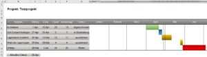

Einfacher Excel-Projektplan
Ich zeige dir heute einen einfachen Projektplan in Excel. Diesen benutze ich selbst und du darfst ihn dir gerne downloaden und frei verwenden. Die Datei findest du am Ende dieses Artikels.
Excel ist verblüffend vielfältig und vor allem, entgegen gängiger Meinungen, NICHT langweilig. Okay. Ich kann den ein oder anderen verstehen, der Excel als Belastung sieht. Unfreiwillig trägst du jeden Tag aufs Neue Kennzahlen in immer die selbe Excel-Tabelle ein. Doch das Programm kann so viel mehr! Deiner Kreativität sind (fast) keine Grenzen gesetzt.
Vielleicht fragst du dich: Ein Projektplan in Excel? Wie soll das gehen? Und außerdem gibt es doch MS Project und viele weitere Anwendungen, mit denen Projektpläne erstellt werden können. Doch nicht jeder möchte sich extra solch ein Programm anschaffen. Außerdem, wie gesagt: In Excel ist (fast) alles möglich.
Excel-Projektplan

So sieht fertige Projektplan aus. Wie du ihn benutzen und anpassen kannst, erfährst du jetzt.
Neuen Vorgang anlegen
Innerhalb der ersten Spalte kannst du den Namen deines Vorgangs frei wählen. In der zweiten Spalte trägst du das Anfangsdatum ein. Die dritte Spalte überspringst du und trägst die voraussichtliche Dauer für die Aufgabe ein. Das Enddatum berechnet sich daraus automatisch.
Der Projektplan berechnet außerdem automatisch die Netto-Arbeitstage aus dem Startdatum und dem Enddatum des Vorgangs. In den Spalten „Ende“ und „Arbeitstage“ sind also Formeln hinterlegt. Hier bitte nichts händisch eintragen. Zuletzt kannst du im Drop-Down Menü den Status definieren.
Zur Demonstration habe ich schon fünf Test-Vorgänge angelegt. Wie du siehst, werden die einzelnen Vorgänge farblich markiert. Vorgänge mit dem Status „abgeschlossen“ werden hier grün markiert, „in Bearbeitung“ blau, „ausstehend“ gelb und „Risiko“ rot.
Sind bereits alle freien Reihen für gefüllt und du brauchst eine neue Reihe, dann gehe wie folgt vor:
- Wähle die gesamte Zeile eines Vorgangs aus, über den Sie den neuen Vorgang platzieren wollen.
- Halte die „Strg“-Taste und drücke „+“.
- Nun kopiere die gesamte Zeile eines anderen Vorgangs in die neue und freie Zeile, damit alle Formeln übernommen werden.
- Passe die Werte in den kopierten Zellen nach den Regeln „Neuen Vorgang anlegen“ (s.o.) an.
Vorgang löschen
Es gibt zwei Möglichkeiten einen Vorgang zu löschen:
- Lösche die Einträge aus den Zellen, die du beim Anlegen des Vorgangs gefüllt hast.
- Markiere die gesamte Zeile des Vorgangs, halte die „Strg“-Taste und drücke „-„.
Neues Projekt anlegen
Bei einem neuen Projekt kopiere die Blankovorlage, damit diese weiterhin als Vorlage verwendet werden kann. Innerhalb der Kopie trägst du deine Vorgänge ein.
Unter Umständen möchtest du, aus optischen Gründen, dass der Projektplan z.B. nur die Monate April bis August anzeigt:
- Dann markieren Sie die gesamten Spalten über Januar bis März und halten Sie die „Strg“-Taste und drücken Sie „-„.
- Danach machen Sie das selbe mit den Spalten über September bis Dezember.
- Tipp: Um die sehr schmalen Spalten über den Monaten zu markieren, zoomen Sie etwas näher ran. Das funktioniert mit „Strg“-Taste und Mausrad.
Funktionsweise Excel-Projektplan
Für die ganz interessierten unter euch, erkläre ich an dieser Stelle die Funktionsweise des Projektplans, bzw. wie die Einfärbung funktioniert:
- In jeder Zelle direkt über den Monaten steht unsichtbar ein Datum (Zelle H4 = 01.01.2021 / Zelle I4 = 02.01.2021 usw.)
- In jeder Zelle unterhalb der Monate steht eine Formel. (z.B. Zelle H6 =WENN(UND(H$4>=$C6;H$4<=$D6);$G6; „“)
- Übersetzt macht die Formel Folgendes:
- Wenn das (unsichtbare) Datum in Zelle H4 größer oder gleich dem Startdatum (C6) und kleiner oder gleich dem Enddatum (D6) ist, dann trage den Status in die Zelle ein. Wenn nicht, dann trage nichts ein
- In jeder eingefärbten Zelle von z.B. Vorgang „Ist-Analyse“ steht unsichtbar das Wort „abgeschlossen“
- Abschließend gibt es eine bedingte Formatierung in jeder Zelle unter den Monaten. Diese gibt vor, dass jede Zelle mit dem Inhalt „abgeschlossen“ grün markiert werden muss, usw.
Excel-Projektplan zum Download
Wenn dir der Projektplan gefällt, oder du ihn einfach nur haben und nie wieder verwenden möchtest, kannst du ihn dir hier Downloaden: Excel-Projektplan
Excel Termin buchen
Bei Fragen schreibe doch gerne einen Kommentar unter den Artikel. Bei komplexeren Anliegen darfst du dir auch gerne einen individuellen Beratungstermin buchen.
Weitere Artikel

Digitale Tools für Zusammenarbeit im Office
E-Mail, Digitale Ablage und eine Branchensoftware sind schon lange nicht mehr genug für effiziente Zusammenarbeit. Doch bevor Sie sich in einem Dschungel an digitalen Werkzeugen verlieren, sollten Sie sich über die Systematik …

Puffer sichern Flow
Es wird allerhöchste Zeit, sich von der Idee, dass nur wer am Limit arbeitet, effizient sei, zu verabschieden. Unter Volllast, ganz ohne Puffer zu arbeiten ist eine „gute“ Voraussetzung für Unzuverlässigkeit, Fehler …